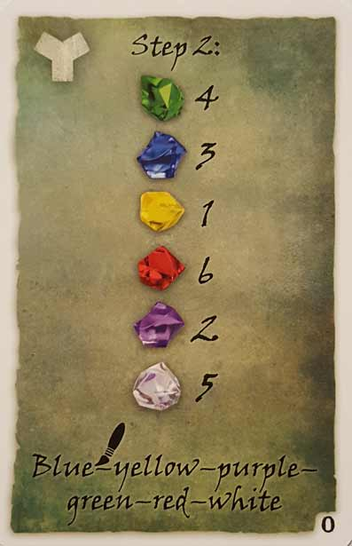

In this Exit: The Game – The Sunken Treasure review, Will breaks down the one-use-only, escape room game from designers Inka and Markus Brand. Published by KOSMOS, Exit: The Sunken Treasure has its players assuming the roles of treasure hunters that are on the trail of the sunken loot of the Santa Maria. Once the vessel’s location is discovered, the players dive down to claim their fortune, only to become locked inside the decrepit ship with their air quickly running out. The stakes are high, the puzzles are numerous, and the riddles keep on coming. For what we thought of this one, continue on below.
Hey all, Will here. Since D’s laptop is on the fritz, this week’s review is going to be all me. However, D wanted me to let you know that he really liked The Sunken Treasure – his exact quote was, “It’s a winner”. He also looks forward to playing another installment of the Exit series, either on the channel or elsewhere. Before I get started, I want to remind you that this write-up is meant to accompany our gameplay video, so go check that out if you want.
Will reviews Exit: The Game – The Sunken Treasure
 Ever since the first Exit game
hit the shelves, I’ve been dying to try them out. I’ve never had an
opportunity to experience a real-life escape room, so the concept of
doing one on our table excited me. After finally playing through Exit: The Game – The Sunken Treasure,
I can confidently state that designers Inka and Marcus Brand have a lot
to be proud of. Sure, I’ve only played through one of the many Exit titles,
but from what I’ve seen from reviews and BoardGameGeek ratings, it
seems the others are similarly satisfying. It’s a shame these games are
one and done, as I’d love to watch some of my other friends play through
The Sunken Treasure.
Ever since the first Exit game
hit the shelves, I’ve been dying to try them out. I’ve never had an
opportunity to experience a real-life escape room, so the concept of
doing one on our table excited me. After finally playing through Exit: The Game – The Sunken Treasure,
I can confidently state that designers Inka and Marcus Brand have a lot
to be proud of. Sure, I’ve only played through one of the many Exit titles,
but from what I’ve seen from reviews and BoardGameGeek ratings, it
seems the others are similarly satisfying. It’s a shame these games are
one and done, as I’d love to watch some of my other friends play through
The Sunken Treasure.
Since an Exit game is played once and that’s it, it’s almost pointless to assess the component quality of an installment. In addition to that fact, I’m pretty sure I bought our copy for $11, so that should also hint at the build quality or rather, a lack thereof. This is a game that’s meant to be cut up, folded, bent, and manipulated in a plethora of ways. In other words, the paper and cardstock are cheap feeling, but that’s absolutely acceptable and understandable. And hey, The Sunken Treasure came with cute, little plastic gems, so at least we can reuse those.
When we were setting up The Sunken Treasure, we quickly realized that the Exit games aren’t the easiest to pick up and play. Reading through the concise rulebook, I felt a little confused, and it wasn’t until we started playing that I understood how to proceed. I’m not sure if this was a deliberate choice, as I’ve heard that real-life escape rooms are somewhat difficult at the start, but I probably would’ve worded some of the instructions differently. To give you an example – the game comes with a card that says something along the lines of, “Stop! If you’ve reached this card, you’ve won the game”. We knew that card was supposed to go at the bottom of one of the decks, but we weren’t sure which one since it was our first time playing an Exit game. That card actually doesn’t really matter, but we weren’t aware of that at the time. And since we assumed that every component in the game was likely to be utilized, the uncertainty that card created was sort of stressful.
Though once the game got going, I really liked – or borderline loved – my experience with it. For starters, I truly appreciate the companion app for the Exit series. It’s neat that there are custom sound effects and timers for each separate installment – they really help with both immersion and keeping the time. Yes, I know saying that the timer keeps time is both stupid and obvious, but once you play one of these, you’ll understand how important that cursed clock becomes.
While the app is impressive and useful, the gameplay is even better. The Sunken Treasure is considered a novice difficulty experience, but it still challenged us throughout. Even the puzzles that were simpler to solve were fun, like the one that had us following the path of the sea vessel that sunk. When we ran into a tough puzzle, like the one that had us searching for the wreck on the ocean floor, we didn’t get that frustrated. Granted, that’s because we eventually realized that we forgot the game box was also supposed to be utilized, so our confusion was of our own making and not of the game’s. Then again, the reason we had that problem was because certain things are unclear the first time you play an Exit game. Just like real-life escape rooms, your first time is not only going to be its own adventure, but also a learning experience for how these kind of games are going to go overall. For that reason, I wholeheartedly recommend starting at a beginner level if you’ve never played one of these before.
As I stated earlier, once we got going, we picked up on how these games flow and really got into it. Exit games require cooperation, and I can easily see how a domineering person could take over a session, so pick your team wisely. Luckily, we work well as a group, and I was pleasantly surprised at how much we shared and how we carved out our own meaningful roles. D became our note taker and math guy. Graham stepped up and became our scissors / folding expert, manipulating the crap out of the components. And I was the reader, as well as the utility guy, helping out where I could. Thinking about it, the gameplay was really fun, but working together as a unit was what made the game.
Though The Sunken Treasure’s adherence to theme also contributed to my enjoyment of it. I can’t speak to how well theme is handled throughout the series, but I can say that I indeed felt like a fortune-hunting diver while playing this game. The art isn’t fantastic in any way, but it serves its purpose and is effective enough as a medium for puzzles and riddles. When I first saw the illustration of the captain’s quarters, for example, I was enthralled by the setting, scanning the decrepit room for chests and symbols. And then there was this puzzle involving a locked door and a complex coded mechanism… I had so much fun with all this stuff. The fact that each Exit game has its own theme, related artwork, and corresponding puzzles blows my mind.
All in all, I’ve said what I wanted to say about the Exit series as of now. Specifically speaking, The Sunken Treasure was a blast to play and I really recommend it. As for the Exit games as a whole, I think I need to play more, and I definitely want to play more. I mean – now that I actually know what I’m doing, I want to test my mettle against harder difficulties. To reiterate, your first ever session of an Exit game is probably going to be rough if you’re playing with newbies, and that experience can be kind of annoying, especially if you want to limit your usage of clue cards. So does the series become better the more you play it? I suspect it does, and I can’t wait to find out for sure. If you want us to play more of these games on the channel, let us know and we’d be glad to. Either way though, I have a feeling that the Exit games will be returning to our table soon.
I give Exit: The Game – The Sunken Treasure a: B+
Exit: The Game – The Sunken Treasure – Board Crazy’s Ratings
Leave a Reply
You must be logged in to post a comment.